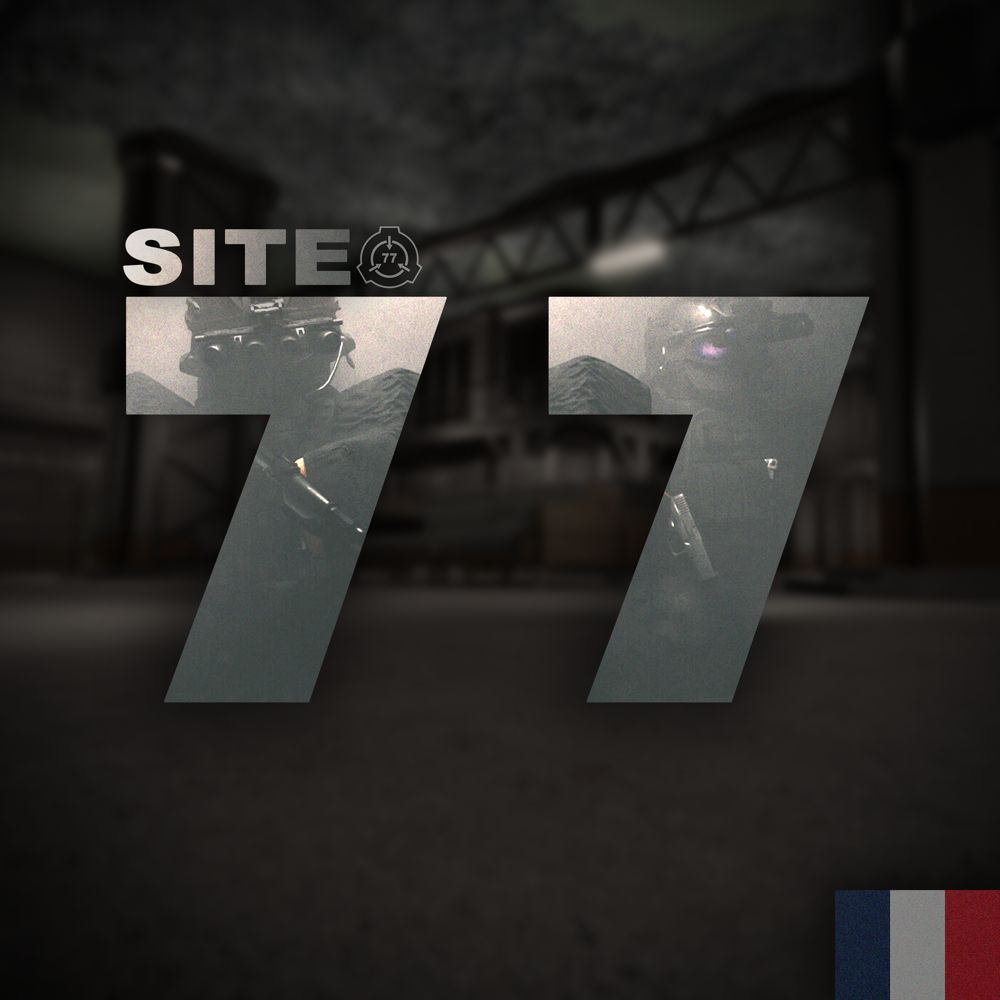

Fondation SCP · Site-77
Département des Affaires Externes
La ligne de front de la Fondation face au monde extérieur : relations avec les groupes d’intérêt, communication diplomatique, recrutement et discrétion. Cette base regroupe les documents officiels et opérationnels du Département.
« Nous ne contrôlons pas le monde extérieur. Nous contrôlons ce qu’il sait. »

Mission du Département
Le DAE gère les relations avec les Groupes d’Intérêt (GI), assure la communication diplomatique, maintient les liaisons nécessaires entre les interlocuteurs concernés et la Fondation, et recrute le personnel. Il est aussi chargé de dissimuler l’activité des agents et des installations de la Fondation face au monde extérieur.
Ses compétences s’arrêtent à ces missions : il n’a aucune autorité générale sur les autres départements du Site-77. Sa devise dit sa ligne de conduite : discrétion, diplomatie, confidentialité, protection des intérêts de la Fondation.
Objectifs
- Tenir une position cohérente envers chaque GI, quel que soit le membre qui traite.
- Contrôler les informations transmises à l’extérieur.
- Protéger la Fondation dans chaque échange, y compris quand la relation se dégrade.
- Laisser une trace datée et attribuée de toute activité significative.
- Garantir la continuité du Département.
Accès rapide
Rejoindre le Département
Le recrutement se fait directement depuis ce site : postes ouverts, déroulement et formulaire de candidature.
Candidater au DAE Télécharger le document de référence (PDF)